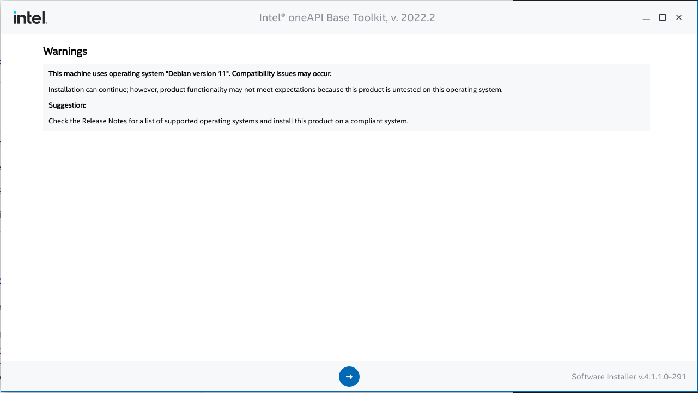
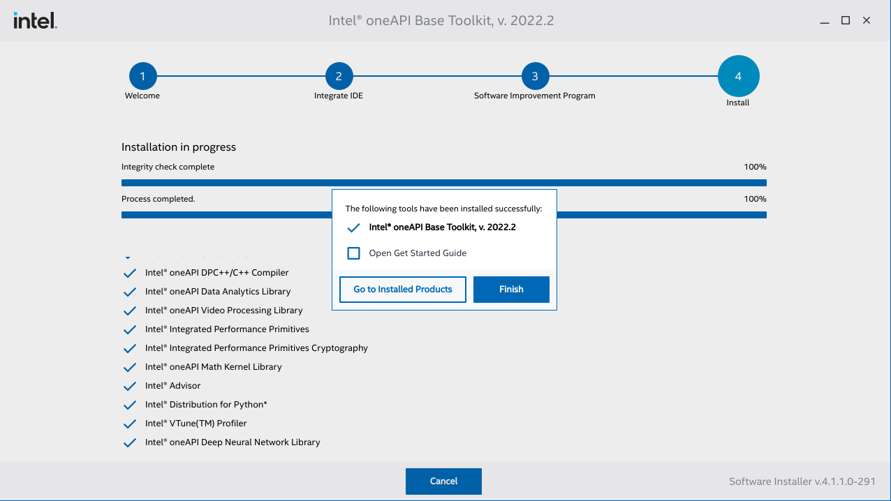

OneMKL安装说明¶
安装准备¶
安装OneMKL的开发必要软件
song@ls-ubuntu:~$ sudo apt update
song@ls-ubuntu:~$ sudo apt install cmake pkg-config build-essential
安装最新版本的OneAPI Base Toolkit(Version 2022.2.0)
song@ls-ubuntu:~$ wget https://registrationcenter-download.intel.com/akdlm/irc_nas/18673/l_BaseKit_p_2022.2.0.262_offline.sh
song@ls-ubuntu:~$ sudo sh ./l_BaseKit_p_2022.2.0.262_offline.sh
Extract l_BaseKit_p_2022.2.0.262_offline completed!
跳转至OneAPI安装程序
遵循安装程序，安装成功
安装完成后，检查OneAPI是否安装在默认目录下
song@ls-ubuntu:/$ /opt/intel/oneapi
bash: /opt/intel/oneapi: Is a directory
示例¶
使用oneAPI CLI示例浏览器在Terminal中运行oneMKL的示例 black_scholes
在Command Line上初始化OneAPI环境
song@ls-ubuntu:/$ . /opt/intel/oneapi/setvars.sh
:: initializing oneAPI environment ...
bash: BASH_VERSION = 5.1.4(1)-release
args: Using "$@" for setvars.sh arguments:
:: advisor -- latest
:: ccl -- latest
:: compiler -- latest
:: dal -- latest
:: debugger -- latest
:: dev-utilities -- latest
:: dnnl -- latest
:: dpcpp-ct -- latest
:: dpl -- latest
:: intelpython -- latest
:: ipp -- latest
:: ippcp -- latest
:: ipp -- latest
:: mkl -- latest
:: mpi -- latest
:: tbb -- latest
:: vpl -- latest
:: vtune -- latest
:: oneAPI environment initialized ::
从上面的列表中发现 mkl – latest （即oneMKL最新版本）已在本地
运行OneAPI CLI应用程序
song@ls-ubuntu:/$ oneapi-cli
跳转至oneapi-cli界面

向下移动箭头选择 Create a project，然后按回车键
在此示例中，选择cpp，并运行oneMKL中的示例 black_scholes
song@ls-ubuntu:/$ oneapi-cli
running on:
device name: Intel(R) Gen9
driver version: 0.91
running floating-point type float
running USM mkl::rng
<s0> = 29.9999
<x> = 29.9994
<t> = 1.50002
running USM mkl::vm
<opt_call> = 27.148
<opt_put> = 4.12405
```
...
```
running Buffer mkl::rng_device
<s0> = 30.2216
<x> = 30.0563
<t> = 1.49756
running Buffer dpcpp
<opt_call> = 27.3496
<opt_put> = 4.10354
```
CMAKE示例¶
在cmake中添加依赖：
find_package(MKL CONFIG REQUIRED)
target_link_libraries(onemkl_example PUBLIC $<LINK_ONLY:MKL::MKL>)
用oneMKL生成10个正态分布随机数：
#include <thread>
#include "mkl.h"
int main() {
int n = 10;
auto eps = static_cast<float *>(calloc(n, sizeof(float)));
VSLStreamStatePtr stream;
vslNewStream(&stream, VSL_BRNG_MT2203, 777);
vsRngGaussian(VSL_RNG_METHOD_GAUSSIAN_ICDF, stream, n, eps, 0.0, 1.0);
vslDeleteStream(&stream);
for(int i = 0; i < n; i++)
{ printf("%1.4f ", eps[i]); }
printf("\n");
return 0;
}
0.3663 0.7881 0.4015 1.6184 1.0442 1.2355 -1.4616 -0.0080 0.1996 0.0391